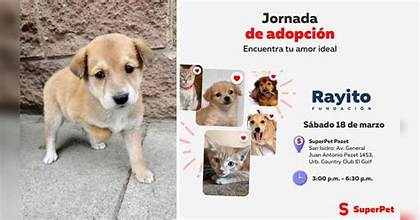
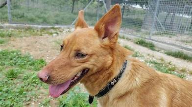
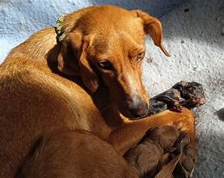
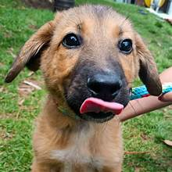
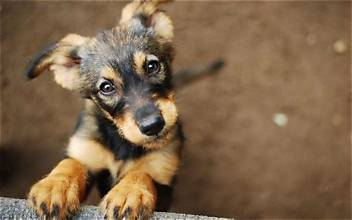

Nuestros rescatados listos para un hogar

Rocky
Un perrito fuerte, muy leal y lleno de vitalidad. Ideal para patios grandes y paseos largos.
Iniciar Adopción
Talia
Tranquila, amorosa y de mirada tierna. Se lleva excelente con personas de todas las edades.
Iniciar Adopción
Lobito
Sumamente inteligente y curioso. Le encanta jugar con la pelota y aprender nuevas órdenes.
Iniciar Adopción
Tintilina
Una perrita muy dulce que busca un espacio calientito y una familia que la adore sin medidas.
Iniciar Adopción
Lunita
Cariñosa, noble y un poco tímida al principio, pero se gana tu corazón en cuanto la consientes.
Iniciar Adopción
Manchas
Reconocido por su pelaje único, es sumamente amigable y sociable con otros animales.
Iniciar Adopción